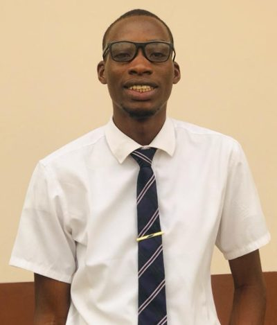

Aghadiaye Amayanvbo Ernest | WDD 130
My name is Aghadiaye Amayanvbo Ernest, a dedicated member of The Church of Jesus Christ of Latter-day Saints, currently pursuing my career as a software developer at BYU Idaho. Hailing from the vibrant city of Benin in Edo State, Nigeria, I bring a unique perspective to my work and interactions. Driven by a passion for technology and innovation, I find immense joy in every aspect of my journey as a young adult. Whether it's crafting elegant code, solving complex problems, or embracing new challenges, I approach each endeavor with professionalism and enthusiasm. Beyond my technical pursuits, I possess a diverse set of skills including problem-solving, collaboration, and adaptability. These qualities, coupled with my unwavering commitment to excellence, define my approach to both personal and professional endeavors. I am excited to continue growing, learning, and contributing to the dynamic world of software development, while staying true to my values and convictions.